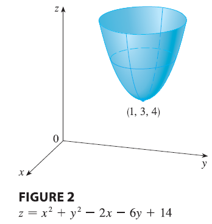

A point \((a, b)\) is called a critical point (or stationary point) of \(f\) if \(f_x(a, b) = 0\) and \(f_y(a, b) = 0\), or if one of these partial derivatives does not exist.
Theorem says that if \(f\) has a local maximum or minimum at \((a, b)\), then \((a, b)\) is a critical point of \(f\). However, as in single-variable calculus, not all critical points give rise to maxima or minima. At a critical point, a function could have a local maximum or a local minimum or neither.
EXAMPLE Let \(f(x, y) = x^2 + y^2 - 2x - 6y + 14\). Then \[ f_x(x, y) = 2x - 2 \quad f_y(x, y) = 2y - 6 \] These partial derivatives are equal to 0 when \(x = 1\) and \(y = 3\), so the only critical point is \((1, 3)\). By completing the square, we find that \[ f(x, y) = 4 + (x - 1)^2 + (y - 3)^2 \] Since \((x - 1)^2 \ge 0\) and \((y - 3)^2 \ge 0\), we have \(f(x, y) \ge 4\) for all values of \(x\) and \(y\). Therefore \(f(1, 3) = 4\) is a local minimum, and in fact it is the absolute minimum of \(f\). This can be confirmed geometrically from the graph of \(f\), which is the elliptic paraboloid with vertex \((1, 3, 4)\) shown in Figure 2.

EXAMPLE 2 Find the extreme values of \(f(x, y) = y^2 - x^2\).
Example illustrates the fact that a function need not have a maximum or minimum value at a critical point. Figure 3 shows how this is possible. The graph of \(f\) is the hyperbolic paraboloid \(z = y^2 - x^2\), which has a horizontal tangent plane (\(z = 0\)) at the origin. You can see that \(f(0, 0) = 0\) is a maximum in the direction of the x-axis but a minimum in the direction of the y-axis. Near the origin the graph has the shape of a saddle and so \((0, 0)\) is called a saddle point of \(f\).